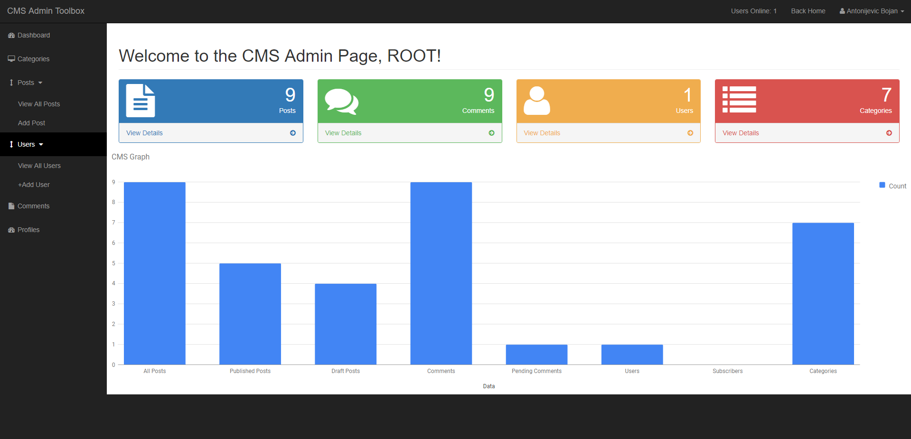

Why I Chose
To Write My Own
I wanted to feel and go through all the aspects that are necessary for building a big project like this. WordPress came like an inspiration. This blog entry system allows you to:
- Register and login as an user
- Reset your password with the recovery email
- Get Admin or Subscriber privileges
- Edit your profile
- CRUD Categories
- CRUD Posts
- CRUD New Users
- Search Posts
- Leave, approve/decline comments
- Admin Dashboard
- Get live Graph of your users, posts, comments

Overview
If you would like to test drive it, use the default admin username: root and password: root to login. Also, you can register a new user ( no email validation will be required), you will get the "Subscriber" privileges which you can change under the "Profile" section. Subscribers will have restricted access in the Admin dashboard.
This is a work in progress, after the system security is improved, new features will be added.